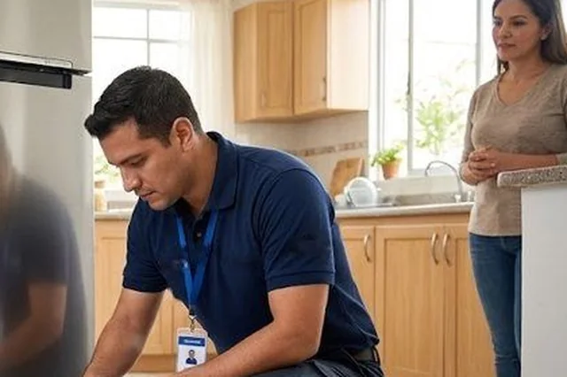
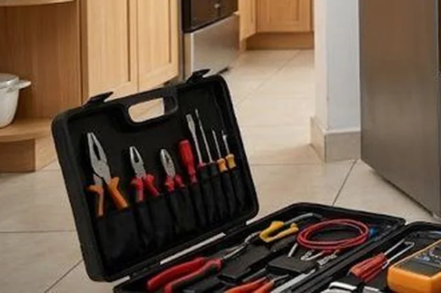
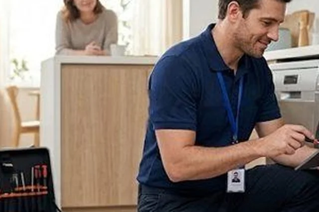
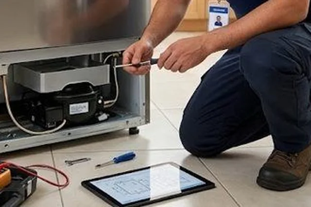
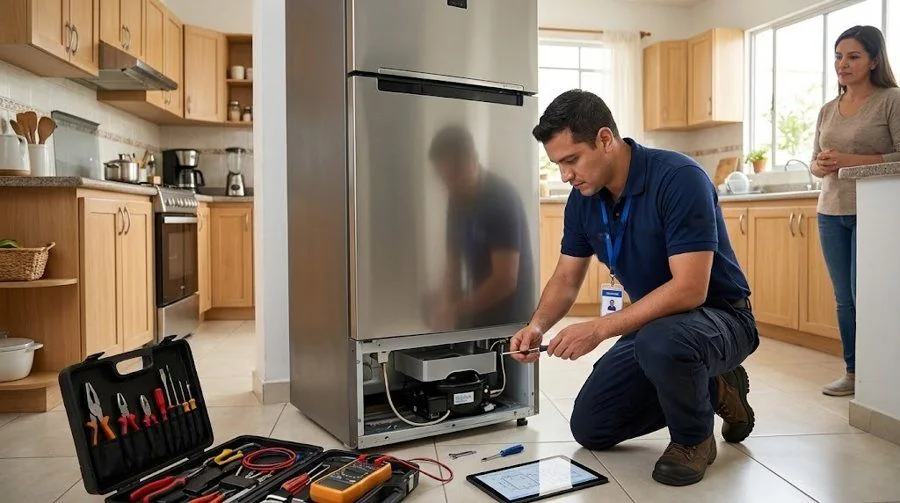

Reparación de electrodomésticos a domicilio
Servicio técnico Samsung Quito
Reparación de electrodomésticos Samsung en Quito: neveras, refrigeradoras, lavadoras y secadoras, en tu casa. Servicio técnico y centro de servicio Samsung a domicilio, con costo antes de reparar.
- A domicilio en Quito
- Norte, centro, sur y valles
- Te explicamos la falla antes de reparar
Nuestros servicios
Todo lo que hacemos por tus electrodomésticos Samsung en Quito.

Reparación a domicilioReparamos a domicilio los electrodomésticos Samsung más comunes del hogar en Quito: refrigeradoras, never…Ver servicio →
Mantenimiento preventivoUn mantenimiento a tiempo cuesta menos que una reparación grande. Revisamos limpieza, conexiones, filtros…Ver servicio →
InstalaciónUna instalación correcta evita fugas, vibración, mal funcionamiento y riesgos con el agua o la electricid…Ver servicio →
DiagnósticoNo siempre se sabe qué falla de un equipo. El diagnóstico identifica la causa, te explica si es reparable…Ver servicio →Tarjetas electrónicasMuchas fallas actuales vienen de la tarjeta de control: el equipo no enciende, se reinicia, muestra códig…Ver servicio → RepuestosSi tu equipo necesita una pieza, primero hay que confirmar cuál es. Te ayudamos a identificar el repuesto…Ver servicio →
RepuestosSi tu equipo necesita una pieza, primero hay que confirmar cuál es. Te ayudamos a identificar el repuesto…Ver servicio →Electrodomésticos que reparamos
Elige tu equipo: cada uno tiene sus fallas, servicios y zonas.

Reparación de refrigeradoras Samsung en Quito
Reparamos refrigeradoras (neveras) Samsung a domicilio en Quito: de congelador superior, Side by Side, Fr…
Fallas más consultadas- Refrigeradora Samsung: no enfría
- Refrigeradora Samsung: el congelador se llena de escarcha
- Refrigeradora Samsung: gotea agua dentro de la nevera

Reparación de neveras Samsung en Quito
Reparamos neveras Samsung a domicilio en Quito: de congelador superior, Side by Side, French Door, con di…
Fallas más consultadas- Refrigeradora Samsung: no enfría
- Refrigeradora Samsung: el congelador se llena de escarcha
- Refrigeradora Samsung: gotea agua dentro de la nevera

Reparación de lavadoras Samsung en Quito
Reparamos lavadoras Samsung de carga superior y de carga frontal a domicilio en Quito: no centrifugan, no…
Fallas más consultadas- Lavadora Samsung: no centrifuga
- Lavadora Samsung: no desagua (queda agua en la tina)
- Lavadora Samsung: no llena de agua

Reparación de secadoras Samsung en Quito
Reparamos secadoras Samsung eléctricas a domicilio en Quito: no secan, no calientan, hacen ruido, tardan …
Fallas más consultadas- Secadora Samsung: no seca o la ropa sale húmeda
- Secadora Samsung: no calienta
- Secadora Samsung: tarda demasiado en secar
¿Buscas un centro de servicio Samsung en Quito?
Con nosotros no llevas el equipo: el técnico va a tu casa.
Cobertura: barrios de Quito
Atendemos el norte, el centro, el sur y los valles. Elige tu barrio.

Cómo trabajamos
Vamos hasta donde está tu equipo, lo revisamos y te explicamos antes de reparar.

Imágenes ilustrativas.
- 1
Escríbenos
Por WhatsApp o llamada al 099 350 8191. Cuéntanos qué equipo es, la marca, el modelo y la falla.
- 2
Diagnóstico en tu casa
Probamos el equipo, identificamos la causa y te explicamos qué tiene.
- 3
Costo antes de reparar
Te informamos el costo y tú decides si continuamos.
- 4
Reparación y prueba
Reparamos y probamos que el equipo quede funcionando.
Guías
Voltaje, limpieza y fallas explicadas para Quito.
Preguntas frecuentes
¿Hacen servicio técnico Samsung a domicilio en Quito?
Sí. Vamos a tu casa, apartamento u oficina en Quito: norte, centro, sur y valles. Escríbenos por WhatsApp con el equipo, el modelo y la falla.
¿Qué electrodomésticos Samsung reparan?
Refrigeradoras, neveras, lavadoras y secadoras.
¿Qué hago si mi equipo está en garantía?
Revisa primero las condiciones de la garantía de fábrica. Si ya venció o necesitas un diagnóstico, escríbenos por WhatsApp.
¿Cuánto cuesta la visita?
Escríbenos al WhatsApp con el equipo, el modelo y la falla; te confirmamos el costo de la visita antes de ir.
¿Dan el costo antes de reparar?
Sí. Primero diagnosticamos, te explicamos la falla y te informamos el costo antes de continuar.
¿Cómo pido el servicio?
Por WhatsApp o llamada al 099 350 8191 (+593 99 350 8191). Envía marca, modelo, falla, tu barrio y, si puedes, una foto de la etiqueta y un video corto.
¿Tu electrodoméstico está fallando?
Escríbenos por WhatsApp con la marca, el modelo y la falla. Te orientamos y coordinamos la visita.
Escribir por WhatsApp Llamar 099 350 8191